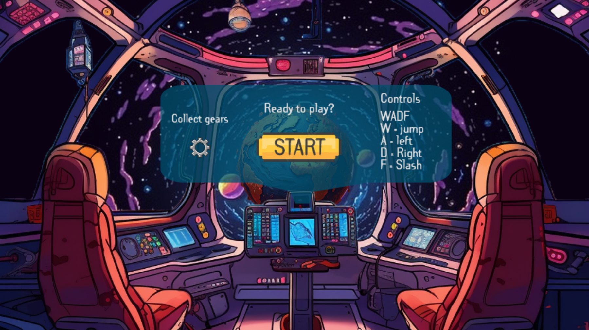
Dit project was het Passieproject waar je een product kon maken naar eigen voorkeur. Ik heb ervoor gekozen om verder te gaan met sidescrollers in JavaScript. De bedoeling van het project was om de wereld iets beter te maken met behulp van je project. Denk aan mensen activeren/informeren over milieu, inclusiviteit, armoede etc. Wij hebben gekozen voor milieu en plastic.
In deze opdracht werkte ik samen met 3 medestudenten: Elton Irokromo, Melvin Vermast & Eva Vrieze. Ons team bestond uit 2 programmeurs en 2 ontwerpers.
Dylan (ikzelf) - Programmeur: Ik was 1 van de 2 programmeurs, Melvin en ik waren dus samen verantwoordelijk voor alle code in ons project. Ik heb de speler geprogrammeerd, deze heb ik kunnen laten springen, lopen, aanvallen etc. Verder heb ik de vijanden geprogrammeerd, die de speler kunnen aanvallen. Ik heb de animaties in het spel gezet dmv spritesheets en ik heb het einde van het spel geprogrammeerd.
Melvin - Programmeur: Melvin was verantwoordelijk voor het programmeren van het beginscherm, de textboxes, de muziek, de SFX, de life/mana bar, de potions en de spiked plants. Verder had hij veel meegeholpen met het programmeren van de enemies. Ook had hij een paar assets gemaakt waaronder de potions, de spiked plants, de bricks en de gears.
Eva - Ontwerper: Eva was onze main artist. Zij was verantwoordelijk voor het ontwerp van de map waarin het spel afspeelt, de speler, de vijanden, voor- en achtergrond etc. Deze heeft ze gemaakt in Adobe Illustrator.
Elton - Ontwerper: Elton kwam pas halverwege het project in ons team, we waren eerst een team van 3. Hij was verantwoordelijk voor het ontwerp van het beginscherm en de cutscenes. Verder was hij veel bezig met de opdrachten buiten het product om, waaronder 3D-versies van de figuren in het spel in Blender.
Samen: We hebben met z'n alle het concept van het spel bedacht met het verhaal en boodschap erachter. Ditzelfde geldt voor alle dialoog dat in het spel te zien is. Verder hebben Melvin & ik samen de level design gedaan.
Verhaal: Het verhaalt speelt af op aarde in 2258. De hele wereld is vernietigd. Alles is verlaten en er zijn gemuteerde vijanden gebaseerd op plastic. Onze hoofdpersonage is een astronaut die al een lange tijd weg is geweest van aarde. Nu dat iedereen op aarde is gestorven heeft hij de opdracht gekregen om onderzoek te doen naar de planeet. Tijdens het spel komt er ook dialoog in beeld als de speler bepaalde items gevonden heeft.
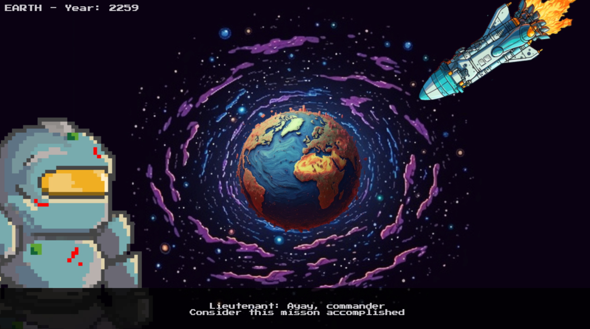
De astronaut heeft de taak om de aarde te onderzoeken
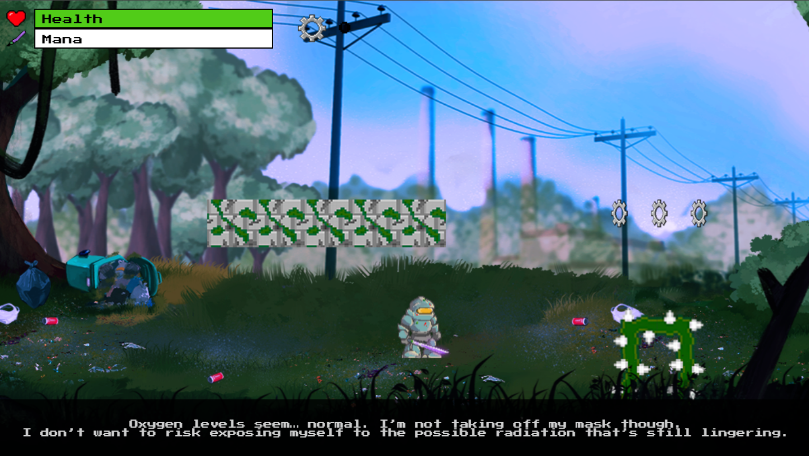
De astronaut is geland op aarde
De speler: Onze astronaut, in ons verhaal wordt hij 'Leutenant' genoemd, wordt bestuurd met WASD. A voor links lopen, D voor rechts lopen en W voor springen. Verder heeft hij een zwaard en kan hij slaan met F. Linksbovenin is een health bar en een mana bar. De health bar gaat omlaag als de speler geraakt wordt door een vijand. De mana bar wordt gebruikt door het zwaard. Als je mana hebt, dan schiet het zwaard een projectiel. Er liggen potions rondom het level om health en mana te herstellen.
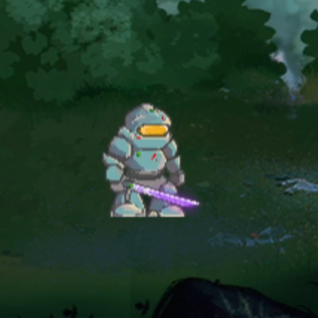
Stilstaand
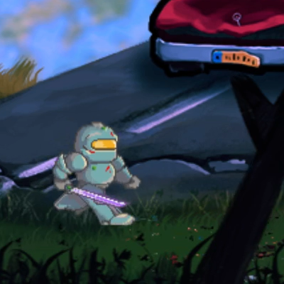
Rennend
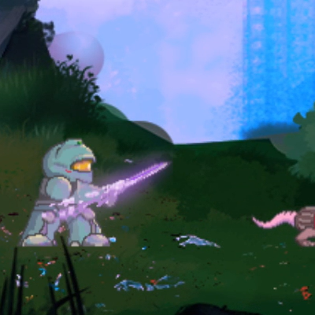
Zwaardslag
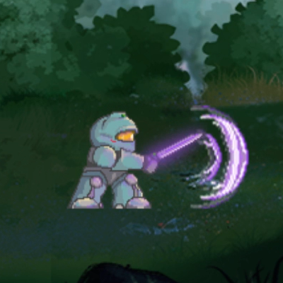
Zwaardslag + Projectiel
De vijanden: Er zijn 2 vijanden. Deze zijn allebei gebaseerd op het plastic probleem. De eerste is een gemuteerde rat 2 hoofden gebaseerd op plastic afval. Deze is geprogrameerd om naar links en rechts te lopen. Als de speler in contact komt met de rat neemt hij 20% schade. Als 2e enemy hebben we de plastic soep. Deze kan projectielen schieten die 50% schade doen naar de speler. Verder is de wereld gevuld met spike planten die de speler afmaken als hij er tegenaan loopt.
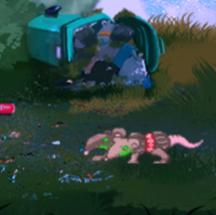
2-koppige rat in de vorm van een plastic fles.
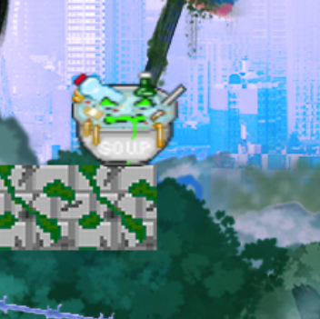
Plastic soep
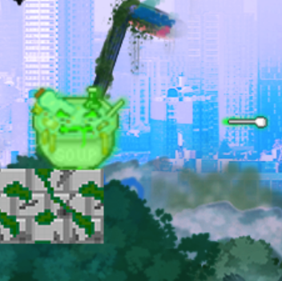
Plastic soep + vork projectiel
Collectibles: Er liggen tandwielen rondom het level. Er zijn in totaal 30 in het spel. Dit geeft de speler een extra opdracht naast het halen van het einde. Zorg voor een zo goed mogelijke score. Verder zijn er toverdrankjes te vinden rondom de map. Deze kunnen je leven/magie herstellen of zelfs verhogen!
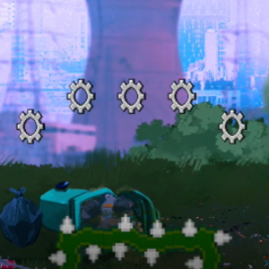
Tandwielen
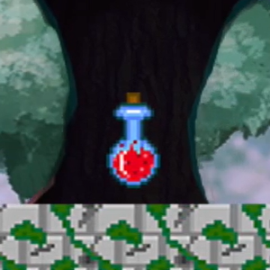
Rood - Herstelt leven
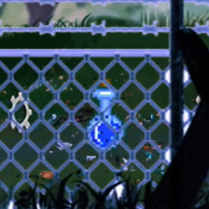
Blauw - Herstelt magie
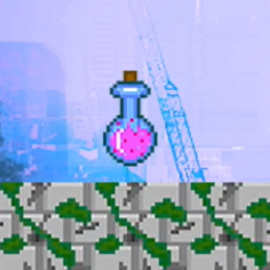
Roze - Verhoogt leven
Animaties: Er zijn animaties toegevoegd door middel van spritesheets. De speler heeft 3 verschillende spritesheets: Stilstaan, rennen en zwaard gebruiken. Verder hebben de tandwielen een spin animatie, de ratten hebben een loop animatie en de plastic soep heeft een schiet animatie.
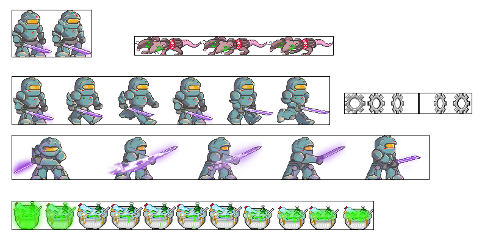
Alle spritesheets in het spel
Muziek en SFX: Er is een dramatische achtergrond muziek toegevoegd om een sfeer te geven aan het spel. Verder zijn er sound effects voor de speler, het zwaard, de enemies, de collectibles en meer.
Einde: Aan het einde van het level komt er een silhouette van achter die op de speler afloopt. Wanneer de speler wordt geraakt komt er een eindscherm met de eindscores en een message van het spel.
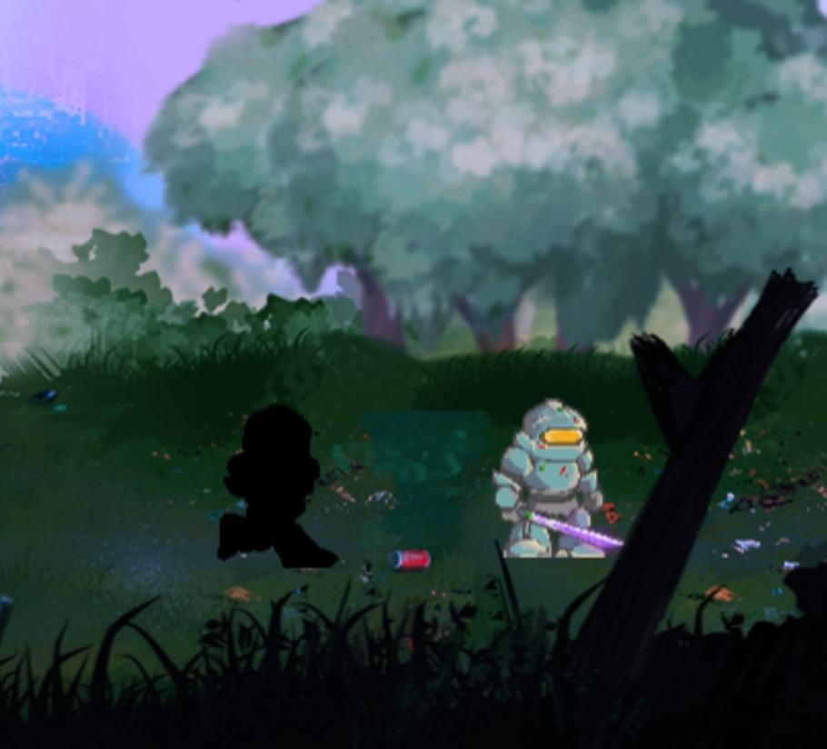
Silhouette komt af op de speler
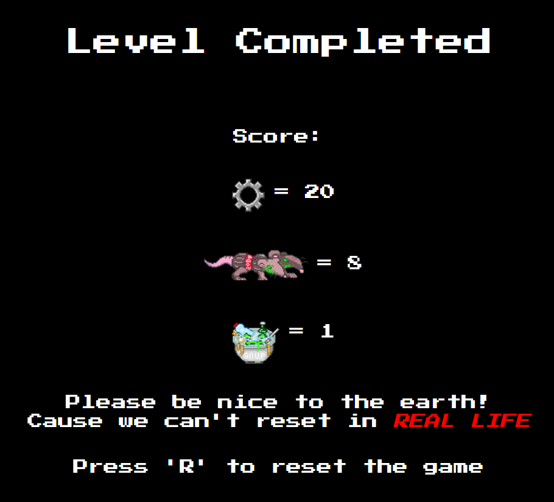
Eindscherm
Eigen reflectie: Ik ben heel blij met het eindresultaat. Het spel is heel mooi geworden. Vooral de animaties en het zwaard zijn onderdelen waar ik zelf heel trots op ben. Wat wel beter had gekund is de leveldesign. We hebben een mooi level gemaakt, maar je kon er niet makkelijk een platformer mee maken, want er waren geen valkuilen. Daarom hebben we besloten om spike plants overal toe te voegen en brick platforms erbij te doen. De spikeplants waren helaas een beetje gebugd: de hitbox was groter dan het lijkt, waardoor de speler dood zou gaan zonder de plant echt aan te raken.